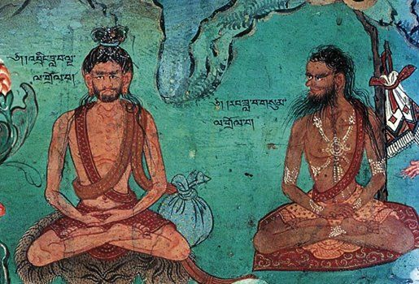
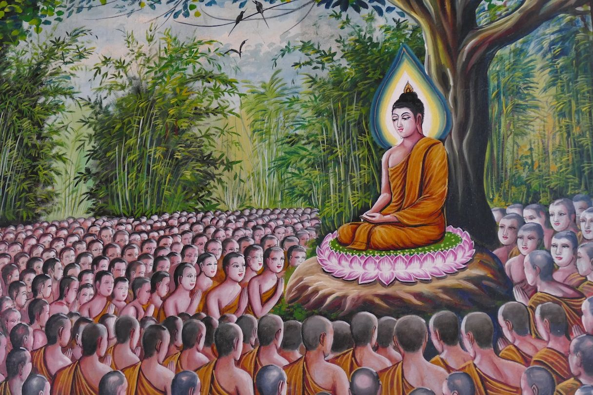
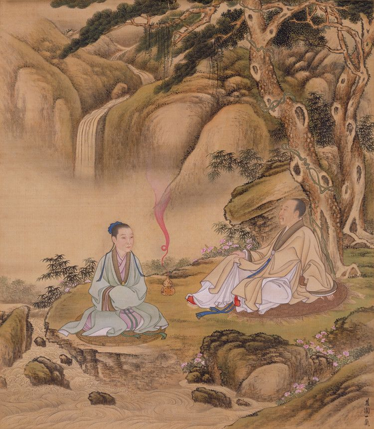

Узнайте, как медитация развивалась на протяжении тысячелетий.
История медитации тесно связана с религиозным контекстом. Уже в доисторических цивилизациях использовались ритмические песнопения и повторения фраз для увещевания богов. Некоторые авторы предполагают, что способность концентрировать внимание, важная для медитации, могла способствовать развитию последней фазы биологической эволюции человека. В Ведах одно из самых ранних упоминаний о медитации. Позднее, примерно с VI по V вв. до н. э., свои формы медитации были созданы в Китае (даосизм) и Индии (буддизм). На западе Филон Александрийский в 20 году до н. э. писал о духовных упражнениях с участием внимания и концентрации. В третьем столетии Плотин разработал техники медитаций.
Мы рассмотрим следующие эпохи, в которых практиковалась медитация:
Медитация имеет древние корни и практиковалась в различных культурах на протяжении тысячелетий. Вот несколько ключевых моментов:
| Период | Изображение | Описание |
|---|---|---|
| Древняя Индия (1500 лет до н.э.) |

Ритуальные практики
|
Индия считается родиной медитации, история которой имеет древнюю и богатую историю. Первые упоминания о медитативных практиках относятся к ведаизму, который появился около 1500 лет до нашей эры. Эти практики впервые упоминаются в священных текстах — Ведах, составленных на санскрите во II и I тысячелетиях до нашей эры. В Древней Индии первые опыты описания медитаций и практики их прохождения возникли в шраманский период, предшествующий Будде и Махавире. В древнейших мифах Индии аскеты и отшельники стремились к духовному росту и могуществу, достигая этого через многодневные, многолетние и непрерывные медитативные практики. Примером такого подвига является герой индийского мифа Вибхишана, обретший бессмертие от богов за свои подвиги подвижничества. В джайнизме, одной из индийских религий, Уддака Рамапутта, один из учителей Будды, считается создателем техник медитации випассаны и прекши, которые являются техниками созерцательной медитации. В поздних индуистских текстах, таких как «Йога-сутры» Патанджали, термин «дхьяна» получает большую и систематизированную разработку. В буддизме Палийский канон, который был письменно зафиксирован в I веке до нашей эры, рассматривает индийскую буддийскую медитацию как шаг на пути к освобождению. |
| Буддизм (VI век до н.э.) |

Практика дзэн
|
ГМедитация играет важную роль в буддийской религии, так как через неё аскет Гаутама стал Буддой. Основой этого процесса стал «срединный путь» между суровой аскезой и наслаждениями мира. Именно медитация стала основой этого пути. В ранних буддийских текстах упоминалось, что Гаутама учился у двух учителей, Адары Каламы и Уддаки Рамапутты, которые обучали его бесформенным джханам или ментальному погружению, ключевой практике буддийской медитации Тхеравады. Восточноазиатский буддизм разработал множество техник медитации, среди которых дзэнские методы дзадзэн и хуатоу, практики Чистой Земли няньфо и гуанфо, а также тяньтайский метод «успокоения и прозрения» (чжангуань). Тибетский буддизм и другие формы ваджраяны в основном опираются на тантрическую практику божественной йоги как центральную технику медитации. |
| Древний Китай (IV век до н.э.) |

Практика цигун
|
Китайская традиция медитации имеет глубокие корни и охватывает множество философских и религиозных школ, таких как даосизм, буддизм и конфуцианство. Каждая из этих традиций развивала свои уникальные подходы к медитации, однако все они стремились к внутреннему покою, гармонии и просветлению. Даосизм, возникший около 4-го века до н.э., акцентирует внимание на единстве с Дао (Путь) и естественностью существования. Даосская медитация включает в себя практики, направленные на развитие энергии (ци), укрепление здоровья и духовное просветление. Одной из самых известных форм даосской медитации является Цигун, которая сочетает в себе дыхательные упражнения, медитацию и физические движения. |
| Современность (XX-XXI век) |
Медитация осознанности
|
Сегодня «медитация» - это психологическая оздоровительная практика, направленная на снижение уровня тревоги и овладение техниками управления эмоциональным интеллектом через самоосознание, самонаблюдение и самопрограммирование. |